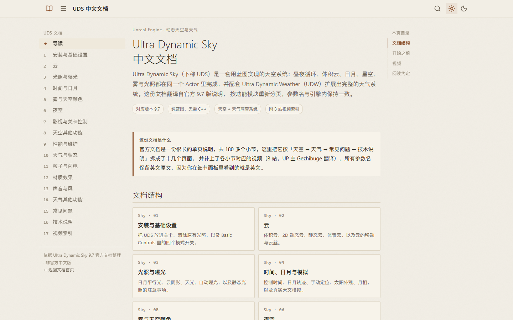
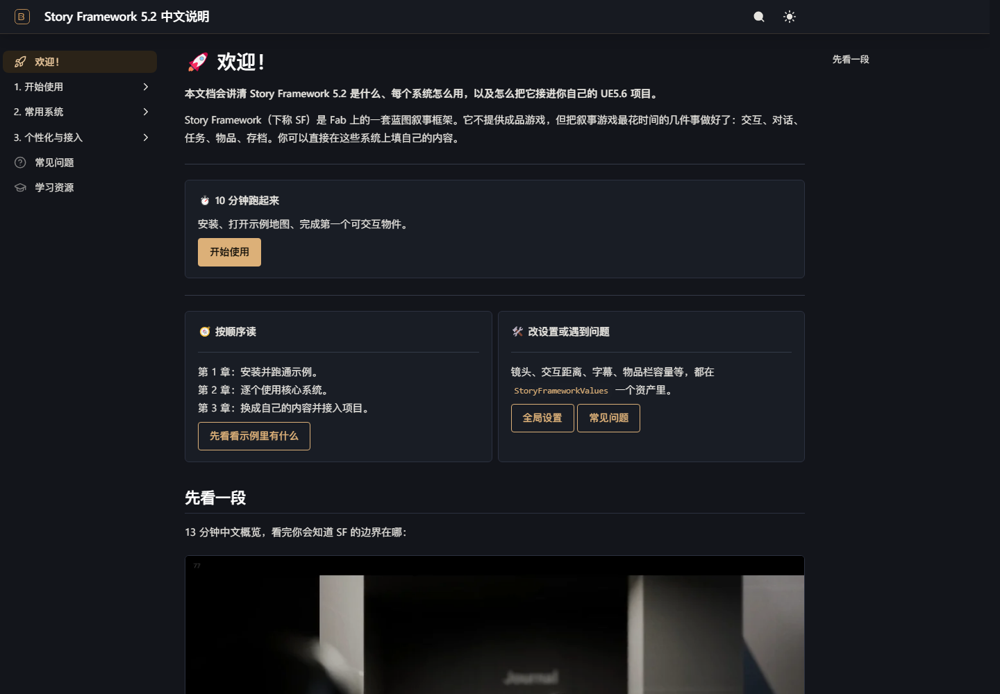
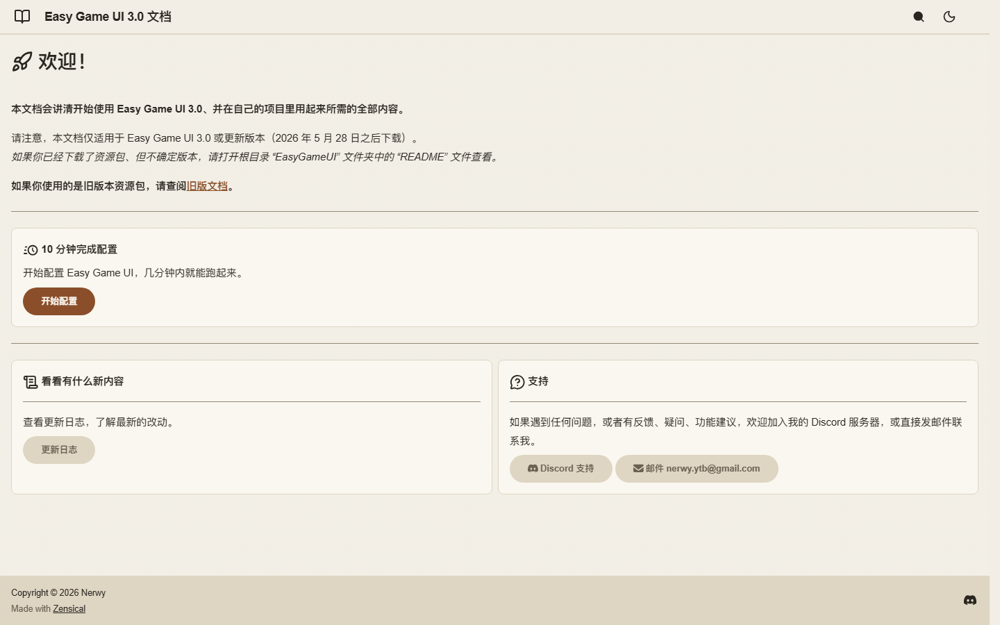

DOCS · UNREAL ENGINE
虚幻引擎资产 · 中文文档
把官方英文文档按新手视角重写、按功能模块重新分页的中文手册。所有参数名保留引擎里的英文原文， 配套 B 站视频直接嵌在对应小节里，点开就能看。
全部文档
点卡片进入
UDS 9.7Ultra Dynamic Sky 中文文档
动态天空与天气系统：昼夜循环、体积云、日月与星空、雾与光照，以及 Ultra Dynamic Weather 天气扩展。
18 页 · 27 个视频
进入 →

SF 5.2Story Framework 中文手册
UE5 蓝图叙事框架：交互、对话、抉择、任务、日志、物品与存档，一套模板凑齐叙事游戏的基础系统。
36 页 · 6 个官方视频
进入 →

EGU 3.0Easy Game UI 中文文档
UI 框架：界面布局、控件与数据绑定、菜单与弹窗，以及跟着做就能跑通的入门流程。
23 页 · 更新至 3.0.2
进入 →